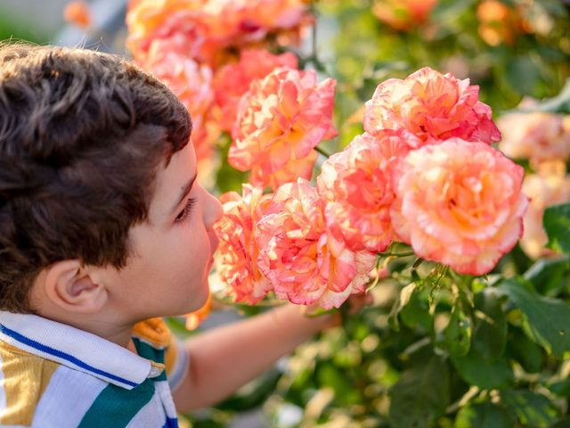
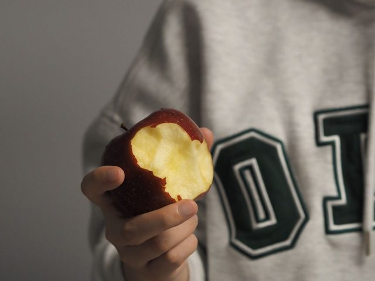
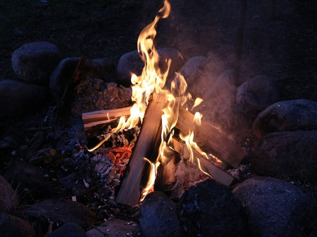
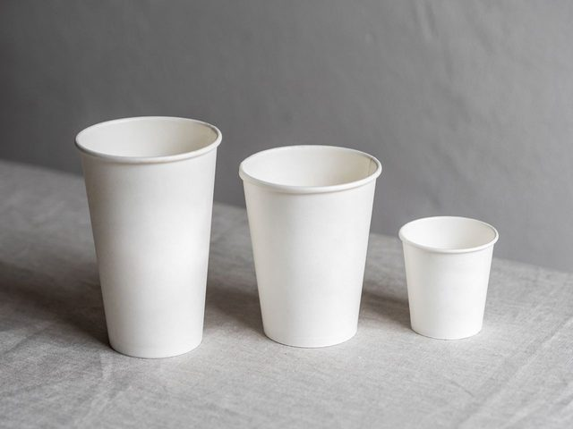
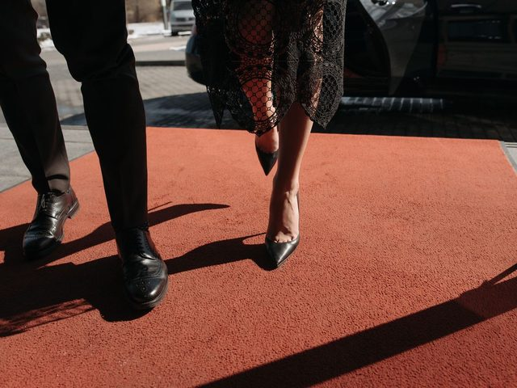

LALA WORD · UNIT 10
一字多義（十）
What Is Life Like in Space?
16 個單字一字多義
本單元單字一覽
dish 是盤子，也是「一道菜」；fire 是火，也是「開除」。這個單元有 7 個主題單字、7 個更多單字，再整理 meet／meat、snack／snake、then／than、hear／listen／sound、a few／a little／few／little，和字尾 -ous（famous、dangerous）。
dishtastestayraiselevelspecialsmellbitefiregasgetmediumrocksoundfamousdangerous
每個字先聽 🔊，再一個意思一個意思看例句。
1. dish 主題單字．2 個意思

dish
複數 dishes
n.盤子；碗盤do / wash the dishes 洗碗
It's my turn to wash the dishes.
輪到我洗碗了。
n.一道菜main dish 主菜；side dish 配菜
Beef noodles is my favorite dish.
牛肉麵是我最喜歡的菜。
2. taste 主題單字．4 個意思

taste
taste - tasted - tasted - tasting
v.嚐起來taste + 形容詞；taste like + 名詞
This soup tastes good.
這個湯很好喝。
v.嚐；品嚐
Can I taste your ice cream?
我可以嚐一口你的冰淇淋嗎？
n.味道
I don't like the taste of bitter melon.
我不喜歡苦瓜的味道。
n.品味
She has good taste in music.
她對音樂很有品味。
3. stay 主題單字．4 個意思

stay
stay - stayed - stayed - staying
v.保持（某狀態）stay up 熬夜；stay away from 遠離
Drink water and stay healthy.
多喝水，保持健康。
v.暫住stay with + 人 暫住某人家
We stayed at a hotel near the beach.
我們住在海邊附近的飯店。
v.待在；停留stay home 待在家
It's raining. Let's stay home.
在下雨，我們待在家吧。
n.停留；住宿
Enjoy your stay in Taipei!
祝你在臺北玩得愉快！
4. raise 主題單字．6 個意思

raise
raise - raised - raised - raising
v.提高（音量等）
Please don't raise your voice.
請不要提高音量。
v.舉起raise one's hand 舉手
Raise your hand if you know the answer.
知道答案的人請舉手。
v.養育；飼養
Grandma raised six children.
奶奶養大了六個孩子。
v.提出
Amy raised a good question.
Amy 提出了一個好問題。
v.募集（資金）raise money 募款
The students raised money for the poor.
學生們為窮人募款。
n.加薪
Dad got a raise this year.
爸爸今年加薪了。
5. level 主題單字．4 個意思

level
複數 levels
n.含量
This drink has a high level of sugar.
這杯飲料含糖量很高。
n.程度；等級
This book is good for beginner level.
這本書適合初級程度。
n.高度water level 水位；sea level 海平面
The water level of the river is rising.
河水的水位在上升。
n.（建築的）層
The food court is on level 4.
美食街在四樓。
6. special 主題單字．3 個意思

special
special - more special - most special
adj.特別的something special 特別的東西
Today is a special day for me.
今天對我來說是特別的一天。
adj.專門的；特殊用途的
Divers wear special suits.
潛水員穿著特殊的潛水衣。
n.特餐；特別節目
Today's special is fried rice.
今天的特餐是炒飯。
7. smell 主題單字．4 個意思

smell
smell - smelled（smelt） - smelled（smelt） - smelling
v.聞起來smell + 形容詞；smell of / like 有…的味道
The flowers smell sweet.
這些花聞起來很香。
v.聞到
I can smell something burning!
我聞到有東西燒焦了！
v.嗅覺；聞
Dogs can smell very well.
狗的嗅覺很好。
n.氣味
I love the smell of fresh bread.
我喜歡剛出爐麵包的香味。
8. bite 更多單字．3 個意思

bite
bite - bit - bitten - biting
n.一口have / take a bite 咬一口
Can I have a bite of your sandwich?
我可以吃一口你的三明治嗎？
v.咬；叮
The mosquitoes bit me all night.
蚊子咬了我一整晚。
v.（魚）上鉤
The fish aren't biting today.
今天魚都不上鉤。
9. fire 更多單字．4 個意思

fire
fire - fired - fired - firing
n.火；火災set fire to 放火；put out the fire 滅火；on fire 著火
The firefighters put out the fire.
消防員撲滅了火。
n.火堆
We sat around the fire and sang songs.
我們圍著火堆唱歌。
v.開槍
The soldier fired into the air.
士兵朝空中開槍。
v.解僱be / get fired 被開除
He was fired for being late every day.
他因為每天遲到被開除。
10. gas 更多單字．4 個意思

gas
複數 gases（gasses）
n.氣體
Water can turn into a gas.
水可以變成氣體。
n.瓦斯；天然氣gas stove 瓦斯爐
Turn off the gas after cooking.
煮完飯要關瓦斯。
n.腸胃脹氣
Eating beans gives me gas.
吃豆子讓我脹氣。
n.汽油gas station 加油站
The car is out of gas.
車子沒油了。
11. get 更多單字．6 個意思

get
get - got - got（gotten） - getting
v.得到；買
Where did you get that cool bag?
你那個酷包包在哪裡買的？
v.收到get a call 接到電話
I got a letter from my pen pal.
我收到筆友寄來的信。
v.上下車get on / off 上／下（公車、火車）；get in / out of 上／下（汽車）
Get on the bus at the next stop.
在下一站上公車。
v.到達get to + 地方 到達
What time did you get home?
你幾點到家的？
v.變得get married 結婚；get used to 習慣
It's getting dark.
天色漸漸暗了。
v.了解
Sorry, I don't get it.
抱歉，我不懂。
12. medium 更多單字．3 個意思

medium
複數 media（mediums）
adj.中等的（尺寸）
I'd like a medium coffee, please.
我要一杯中杯咖啡。
adj.（牛排）五分熟的
I'd like my steak medium.
我的牛排要五分熟。
n.媒介
TV is a popular medium.
電視是很普遍的媒體。
13. rock 更多單字．3 個意思

rock
rock - rocked - rocked - rocking
n.岩石；石塊
We sat on a big rock by the sea.
我們坐在海邊的大石頭上。
n.搖滾樂rock music 搖滾樂；rock star 搖滾明星
My dad loves rock music.
我爸爸很愛搖滾樂。
v.搖晃
The boat rocked in the big waves.
小船在大浪中搖晃。
14. sound 更多單字．5 個意思

sound
sound - sounded - sounded - sounding
n.聲音make a sound 發出聲音
I heard a strange sound outside.
我聽到外面有奇怪的聲音。
n.音量
Can you turn the sound down?
你可以把音量調小嗎？
v.聽起來sound + 形容詞；sound like + 名詞
That sounds like fun!
聽起來很好玩！
adj.完好無傷的safe and sound 安然無恙
They came back safe and sound.
他們平安歸來。
adj.（睡得）很沉的
The baby is in a sound sleep.
寶寶睡得很熟。
15. famous 更多單字．1 個意思

famous
fame 名聲 + -ous
adj.有名的be famous for 因…而有名
Tainan is famous for its food.
臺南以美食聞名。
16. dangerous 更多單字．1 個意思

dangerous
danger 危險 + -ous
adj.危險的
It's dangerous to swim here.
在這裡游泳很危險。
發音或拼字很像的字
| 單字 | 意思 | 例句 |
|---|---|---|
| meet / meat | 遇見 ／ 肉（兩個字發音一樣） | Nice to meet you.／I don't eat meat. |
| snack / snake | 點心 ／ 蛇 | We had some snacks.／There's a snake! |
| then / than | 當時；然後；那麼 ／ 比（比較級） | Then we went home.／He is taller than me. |
易混淆字：hear／listen／sound
| 單字 | 用法 | 例句 |
|---|---|---|
| hear | 聽到（不用刻意去聽） | I heard a dog bark. |
| listen | 專心聽，後面要加 to | Listen to me, please. |
| sound | 聽起來 + 形容詞；sound like + 名詞（沒有進行式） | That sounds great! |
易混淆字：a few／a little／few／little
| 單字 | 用法 | 例句 |
|---|---|---|
| a few | 一些（還有），接可數複數名詞 | I have a few friends here. |
| a little | 一些（還有），接不可數名詞 | There is a little milk left. |
| few | 很少、幾乎沒有，接可數複數名詞 | Few people came to the party. |
| little | 很少、幾乎沒有，接不可數名詞 | There is little water in the bottle. |
有 a 的偏正面（還有一些），沒有 a 的偏負面（幾乎沒有）。
字尾 -ous：「充滿…的；有…性質的」
| 原來的字 | 加 -ous | 意思 |
|---|---|---|
| fame 名聲 | famous | 有名的 |
| danger 危險 | dangerous | 危險的 |
快問快答：這句的 粗體字 是什麼意思？
1Beef noodles is my favorite dish.一道菜
2She has good taste in music.品味
3Enjoy your stay in Taipei!停留；住宿
4Dad got a raise this year.加薪
5The food court is on level 4.（建築的）層
6Today's special is fried rice.特餐；特別節目
7I love the smell of fresh bread.氣味
8The fish aren't biting today.（魚）上鉤
快問快答：這句的 粗體字 是什麼意思？
1He was fired for being late every day.解僱
2The car is out of gas.汽油
3Sorry, I don't get it.了解
4TV is a popular medium.媒介
5The boat rocked in the big waves.搖晃
6The baby is in a sound sleep.（睡得）很沉的
7Tainan is famous for its food.有名的
8It's dangerous to swim here.危險的
學完了！接下來
複習方法
review
- 回到「📗 單字卡」，按「遮中文」，看例句說出每個意思
- 特別記「容易忽略的意思」（例如 pen 圍欄、ball 舞會）
- 每個例句跟著 🔊 唸一次
準備好了
- 按右上角「📝 前往測驗」
- 測驗錯的題目要訂正到全對
- 訂正完成補送 1 點